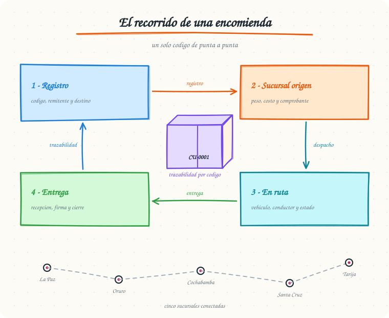

Análisis y Diseño de Sistemas · 2026
Cada encomienda
Cada encomienda
tiene un camino.
Hagámoslo visible.
Registro, recorrido y entrega con un solo código de punta a punta. Un proyecto académico que documenta y demuestra el sistema de una agencia de encomiendas en Bolivia.
Demostración interactiva con datos ficticios · 33 páginas de estudio

La red, sobre el mapa
Abrir mapa y GPS ↗
Cargando la red de ciudades…
Ubicaciones de referencia de cada ciudad. Consulta las posiciones GPS recibidas en el sistema.
Del problema a la solución
Un sistema que también explica sus decisiones
Tres capítulos con el análisis estructurado, el diseño orientado a objetos y las decisiones que sostienen la propuesta.
Qué resuelve
Tres ideas simples, bien ejecutadas
De origen a destino
Registra encomiendas y consulta cada cambio en su recorrido.
Una operación conectada
Organiza sucursales, empresas, vehículos y personal.
Responsabilidad visible
Gestiona incidencias y revisa quién realizó cada operación.
Empieza por donde quieras
Lee el estudio o entra al panel
La documentación explica el análisis; el sistema lo pone en práctica.